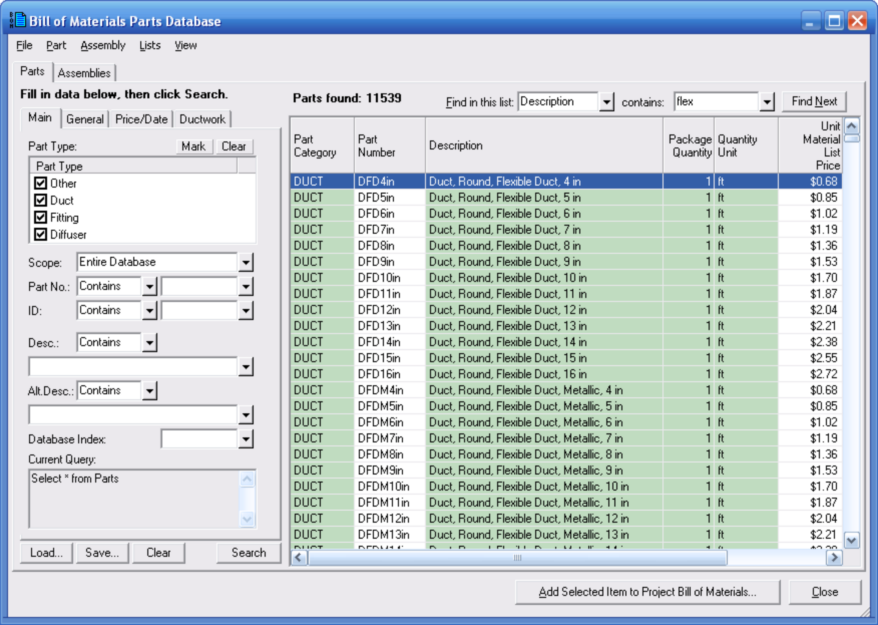

Bill of Materials Parts Database Window Overview |
  
|
Bill of Materials Parts Database Window Overview |
|
Icon:  . Keyboard Shortcut: ALT, G, P
. Keyboard Shortcut: ALT, G, P
Opens the Bill of Materials Parts Database window, shown below, where you can add parts or assemblies to the project bill of materials, add or edit parts or assemblies in the database, import or export files, edit categories and other records, etc..

Defining a Query: The controls on the left side of this dialog let you specify a query to limit the number of parts shown on the right side of this window. Once you have entered what you want on these controls, click the Search button at the bottom to generate the list.
Parts List: The parts list on the right of this window includes all the parts in your database that meet the criteria of the query you entered on the left.
Find in this list... contains: If you want to find a particular part in the current list, first select the column in the first box, then type in some text in the second box, then press Enter or click the Find Next button. To find the next part containing your text, press Enter again or click Find Next again.
Add Selected Item(s) to Project Bill of Materials: Opens a popup menu that lets you select which section in the project bill of materials to which to add the selected part(s) or assembly. To add multiple parts at a time, first hold the Ctrl key down and click on each part you want to add, then click this button.
Close: Closes this window and returns you to the Project Bill of Materials window.